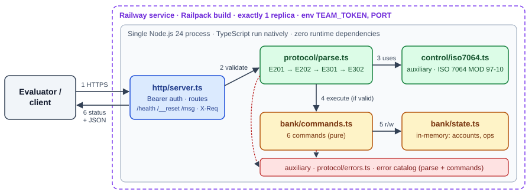

Request flow: 1 HTTPS request → 2 validate message (format, control value, command, arity) → 3 control value check → 4 execute command (only if valid) → 5 read/update in-memory state → 6 status + JSON response. Auxiliary dependencies (red/green "auxiliary"): control algorithm used by validation; error catalog used by validation and commands. http/server.ts is the only I/O adapter; control and bank modules are pure.